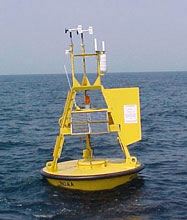

About Me
I am a self-taught software developer. My professional background has been primarily in developing customized business administration software and reporting tools. I have a passion for building intuitive software that facilitates simplifies complex business practices and allows users to understand their data.
I have a B.Sc. in Marine Biology and an M.Sc. in Physical Oceanography. Through my academic work I have experience automating custom data ETL operations, statistical analyses, and data visualizations.
More specific aspects of my work are broken out by section
Research
My academic research was looking into the physical forces that controlled the supply of phytoplankton to the coastal environment. This work invovled data sets in various formats, from various sources, with differing time scales. This work focused on time series analyses. I performed much of this using the Matlab language and IDE, however I am continuing to work on transferring elements of my code base over to Python.
I think the process of attaining my M.Sc. provided me with more than just the rigor needed to develop quality analyses and logical code. It also gave me experience in relating complex concepts to people outside my discipline in ways that are readily understood. This facility has served me well when communicating with the end users of my software.
Business Software
I began teaching myself software development after seeing coworkers struggle with maintaining large amounts of related data across multiple spreadsheets. I began building data systems and business logic automation in Microsoft Access. Over time I realized the most rapidly developing and improving platforms were in web-based data systems. I dove into the Python framework Django and have never looked back. More details regarding the specific technologies I enjoy utilizing can be found in the Tech Stack section.
I delight in buiding systems that authomate business logic, while providing a simplified and intuitive user experience.

My Projects
Since most of the work I've done professionally involve internal tools for businesses, I generally can not share any of those projects. Here I am sharing my personal projects. They represent the broad scope of my interests. While many are not fully fleshed out, they give a decent impression of my design approaches and the aspects of software development I find interesting.
-
Projects
-

NDBC Data Processing
Python class(es) for oceanographic data processing
Repo -
MDN Django Tutorial
I use the Mozilla Developer Network Django tutorial as a simple project in which to test out ideas.
Repo -
DRF - React - Docker
An extremely simple example an application with mutliple containers for creating a
Repo
REST API with Django REST Framework and an app that consumes it with React. -
Coursera ML Course
A repository to save the Octave code and assignment PDFs the ML course
Repo
taught by Andrew Ng on Coursera -
TODO Cataloging CLA
A command line application that collects a list of all TODO comments
Repo
in a project directory and writes them to a file. -
This Site
The development of this site is an example of my front-end development approaches. Repo
My Interests
Much of my education has focused on oceanography and marine science while a good amount of my work has revolved around web application development. While both of these interests are evident in the projects I undertake, there are many diverse topics I am interested in.
-
Machine Learning
While I employed traditional statistical methods in my past research, I am excited by the prospects for Machine Learning (ML). Having completed the introductory Coursera course on Machine Learning, I am familiar with the basic building blocks of many of the most common algorithms. I am excited to see where I can combine ML into other aspects of my work.
-
developer_mode Process Modeling
I didn't expect to enjoy this as much as I do. I have found that gaining an understanding of some process (e.g. business administration, manufacturing, etc. ) and the specific aspects unique to a given situation then translating that into software is a very fun and mentally engaging activity. In most cases I have been able to abstract some of the tedious elements from these processes, identify more efficient approaches, and implement solutions that have dramatically increased productivity.
While it may seem rather dry, I find I enjoy making others lives and work easier and less tedious.
-
insert_chart Data Visualiation
While I delight in data collection and analysis, it can be difficult to digest without some form of visualization. Furthermore, I think a well designed visualization has the power to intuitively communicate the meaning of the data presented. The importance of good data visualization can be seen in the proliferation of tools like Tableau throughout the business world.
I enjoy using pre-built tools such as Tableau but I also enjoy "rolling my own" custom data visualizations.

My Tech Stack
I have found open source technologies to be incredibly powerful and, thanks to the great communties backing them, very easy to learn. I enjoy all the solutions these technologies allow me to develop. My currently employed tech stack is as follows:
-
Docker
Getting comfortable with Docker containers and docker-compose has been a game changer in my application development. It allows me to deploy software will all necessary dependencies and in controlled OS environments. I know it's nothing new at this point but getting to know Docker has allowed me to explore other technologies, since I can simply spin up a new container rather than having to figure out how to nagivate conflicting libraries and port collisions when installing software on a server.
-
PostgreSQL
PostgreSQL is by far my database of choice these days. To me the JSON binary field types promise all the flexibility of a NoSQL DB system while the traditional RDBMS allows me to easily join various data sets to meet my use cases. Also, the community abounds with tutorials and walk throughs to help me determine how to acheive my goals.
-
Python
Python is such a mutli-faceted general programming language that I have yet to run into a problem that I couldn't solve with it. Perhaps even more so than any other software I use, the Python community is overlowing with more tools, tips, and tricks than I could ever keep up with. Working in a technology with so much innovation and participation is exciting. Additionally I find Python code a pleasure to read and write.
-
Django
As a web framework written in Python, I was already well disposed to like Django. While it may be a bit more overhead than a simple service like Flask, it manages to abstract much of the tediousness out of building websites. It achieves this without resorting to any special "under-the-hood" approach which means that if you ever need to modify the default behaviours, the underlying code is easily intelligeble and simple to change or extend. Once again, the community around this project is vast and willing to share all manner of sneaky approaches to solving problems.
In addition to the Django Framework, many other projects have sprung up to extend the capabilities of Django that make developing other resources ridiculously easy. Django Rest Framework is a good example of this and allows an easy way to layer a REST API onto an existing Django project or spin a new one up from scratch.
-
Celery
I'm still wrapping my head around Celery and it's uses. However, anyone that has had to wait for more than a second for some process to complete before a website loads will appreciate asynchronous task queues. I've only implemented Celery to handle fairly simple but nonetheless time consuming tasks but it has resulted in a more pleasant user experience. I am excited to spend some more time digging into what I can do with this tool.
-
D3
As someone who enjoys the graphical representation of data, D3 is something I would love to spend more time working with. I will admit most of what I've done with it could have been accomplished faster with other tools. However, I see great promise in what I could do with this technology and I am determined to get a btter handle on it.
-
Git
As if developing the Linux kernel wasn't enough, Linus Torvalds bestowed upon us Git. Possibly the most elegant, and frustrating, version control systems. I use it every day and it is a core part of my work. However, I am certain I could be doing better with it. As with the rest of my tech stack, I take delight in the fact that there is so much more I can learn to facilitate better process development.